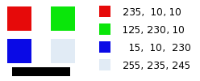
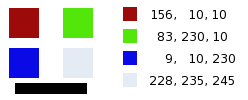

Figura 16.162. Exemplo do filtro“Misturador de Canais”

Imagem Original

“Misturador de canais” aplicado
This command combines values of the RGB channels. It works with images with or without an alpha channel.
- Presets, Blending Options, Preview, Merge filter, Split view
-
![[Nota]](images/note.png)
Nota These options are described in Seção 8.1.2, “Funcionalidades Comuns de Cores”.
- Red Channel, Green Channel, Blue Channel
-
Each of these has three sliders, which set the contribution of the red, green and blue input channels in the output channel. The sliders go from -2 to 2. They represent the multiplication factor of the input channel that will be attributed to the output channel.
- Preserve luminosity
-
The mixing can result in an image where some of the colors are too light. This option lessens the luminosity of the color channels while keeping a good visual ratio between them. So, you can change the relative weight of the colors without changing the overall luminosity.
Each of the output channels is based on the values you set for the three RGB input channels. By default each output channel is based for 100% on the corresponding input channel. This is the one set to 1.0, and the others are set to 0.0. You can change each of the sliders from -2 to +2.
The three RGB input sliders let you give a percentage to every channel. For every pixel in the image, the sum of the calculated values for every channel from these percentages will be given to the output channel. Here is an example:
Figura 16.164. A imagem original e seus canais.

RGB values of the pixels in red, green, blue, gray squares are displayed. The black rectangle is special, because black (0;0;0) is not affected by the command (0 multiplied by any percentage always gives 0). The result can't exceed 255 nor be negative.
Figura 16.165. Canal de saída vermelho. Canal Verde +50

No quadrado vermelho, os valores dos pixels são 230;10;10. Os valores relativos são 1; 0,5; 0. O resultado do cálculo é 230*1+ 10*0,5 + 10*0 = 235. O mesmo raciocínio se aplica para os quadrados verdes e azuis.
No quadrado cinza, que contém a cor vermelha, o cálculo resulta num valor acima de 255. Ele é reduzido para 255. Um valor negativo seria reduzido a zero.
Figura 16.166. Canal de saída vermelho. O canal verde +50%. Opção de preservar a luminosidade selecionada.

The values attributed to the Red Output channel are lower, preventing a too bright image.